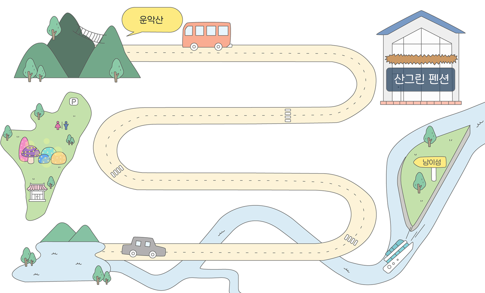
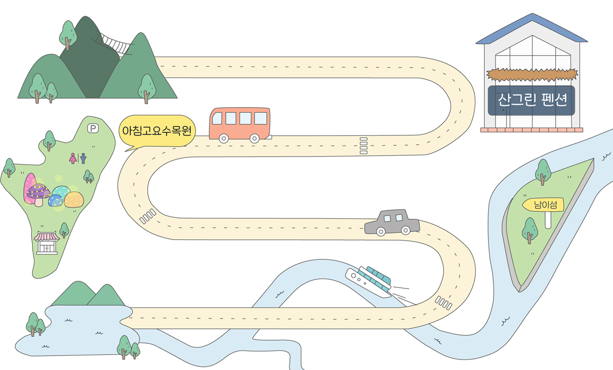
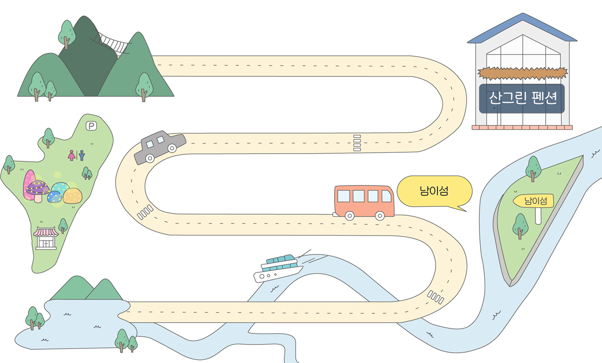
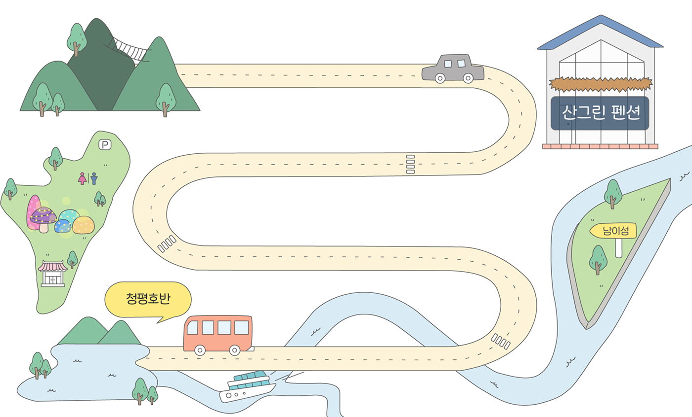

-
운악산
주소: 경기 가평군 하면 운악청계로 589번길 73
위치: 펜션에서 약 0.4km, 차량으로 2분 거리
운악산은 해발 935.5m로 기암과 봉으로 이루어진 산세가 아름다워 小금강이라고도 불리워져 왔다. 또한 천연고찰인 현등사가 있어 그 가치를 더욱 빛내고 있다 .주봉인 만경대를 중심으로 우람한 바위들이 봉우리마다 구름을 뚫고 솟아있어 골짜기마다 하늘을 가리는 활엽수림은 가을이면 단풍으로 물들어 만산홍엽을 이룬다. -
아침고요 수목원
주소: 경기 가평군 상면 수목원로 432
위치: 펜션에서 약 18.8km, 차량27분 거리
아침고요수목원은, 세계에 한국의 아름다움을 알리는 것뿐만 아니라 수목원, 식물원 문화의 주도적인 역할을 담당하고 있는 한국을 대표하는 수목원이다. 아름다운 한국의 자연이 살아 숨쉬고있는 5000여 종의 다양한 꽃나무가 가득하다. -
남이섬
주소: 강원특별자치도 춘천시 남산면 남이섬길 1
위치: 펜션에서 약 34.2km, 차량 41분 거리
연 평균 입장객 300만명 수준을 꾸준히 유지하고 있는 남이섬은 2006년 국가형태를 표방하는 특수관광지 나미나라공화국으로의 독립을 선언 하였다. 자연과 사람이 서로 아끼고 사랑하며 함께 숨쉬는 나라를 만들고자 헌법도 서로를 위하고 존중하는 편한 상식이 법보다 아름다운 법 없이도 살아갈 수 있는 이들을 위한 무법천지법으로 정하였다. -
청평호반
주소: 경기 가평군 설악면 회곡리 산 116
위치: 펜션에서 약 29.4km, 차량으로 36분 거리
청평호는 북한강을 막아 만든 청평댐으로 인해 생긴 인공호수이다. 주위의 산과 호반의 맑은 물이 빚어내는 경치가 매우 아름다울 뿐 아니라 서울에서 불과 50km 떨어진 곳이어서 당일코스 관광지로 발전하기 시작했다. 호반에서는 수상스키를 비롯한 각종 놀이를 즐길 수 있고 숙박시설이 완비되어 있어 사계절 휴양지로 유명하다.Tour Spot 한눈에보기
   